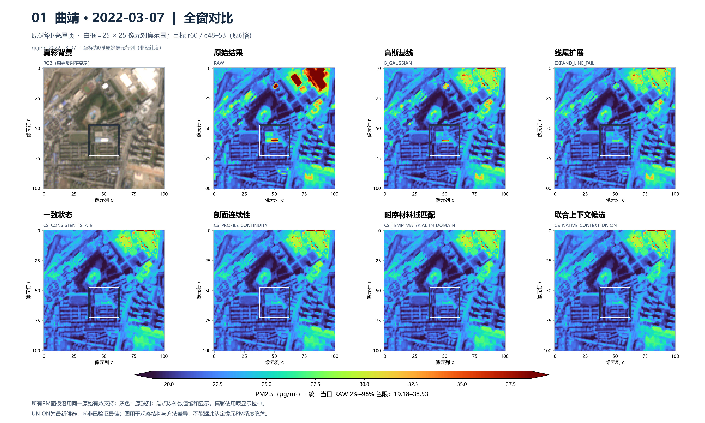
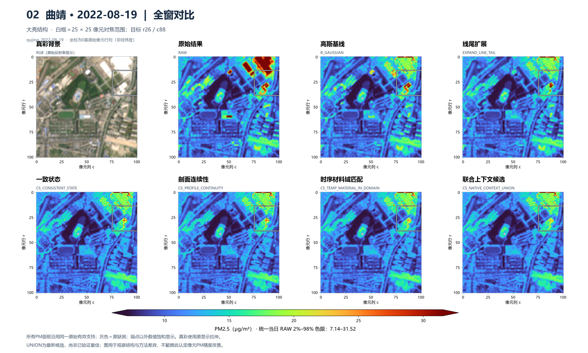
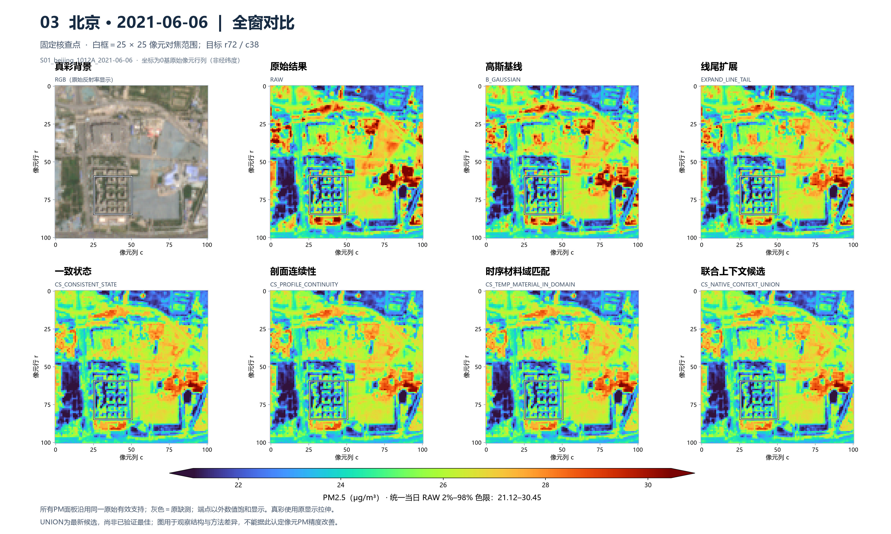
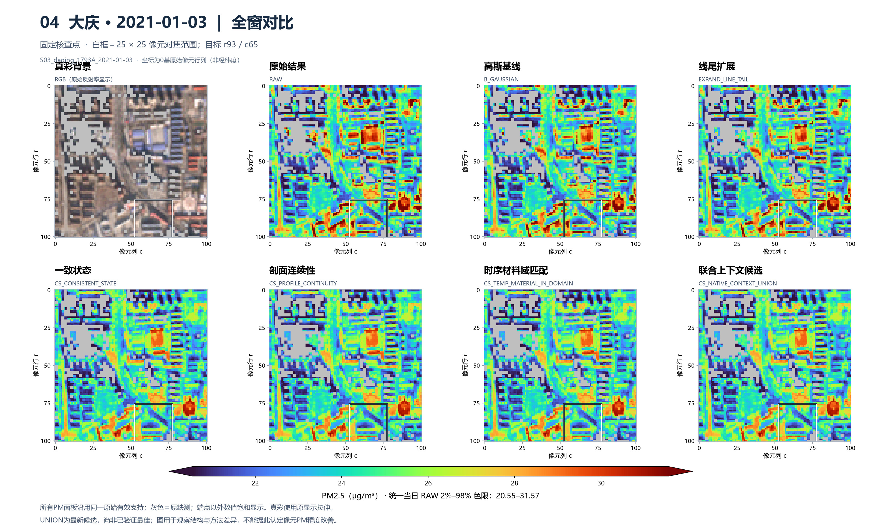
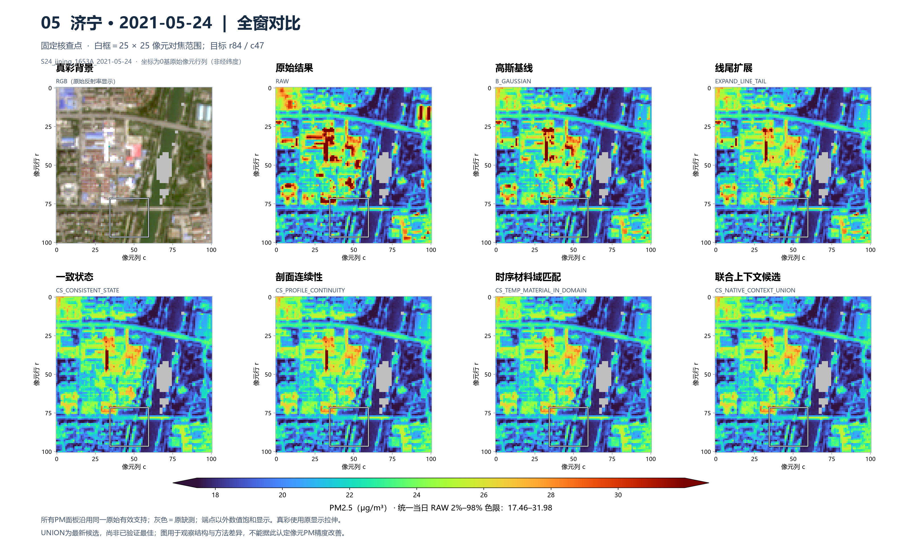
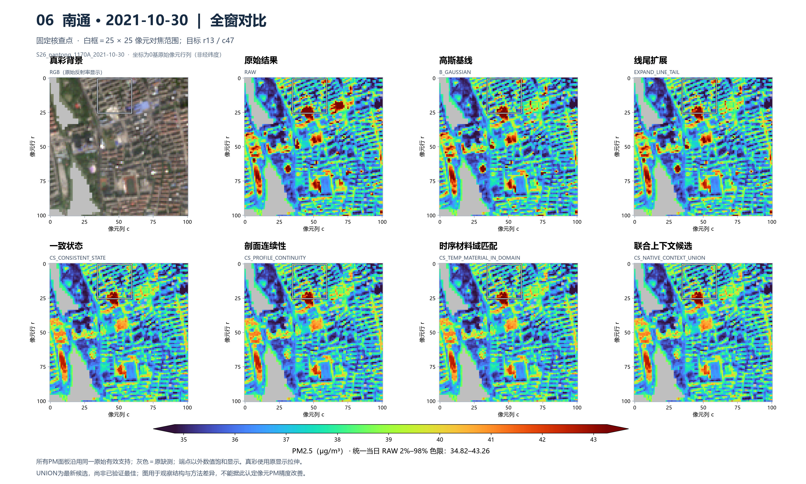
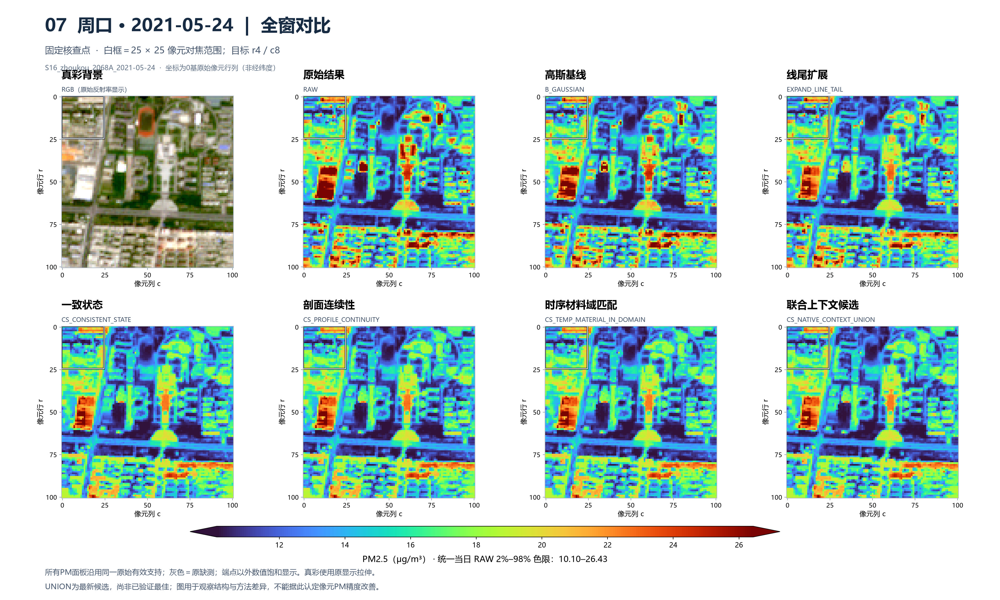
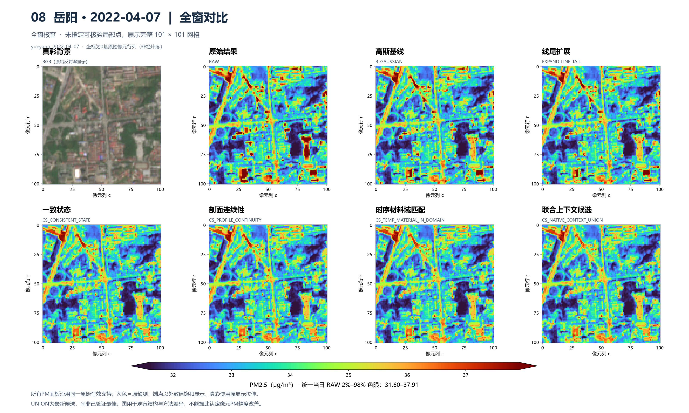
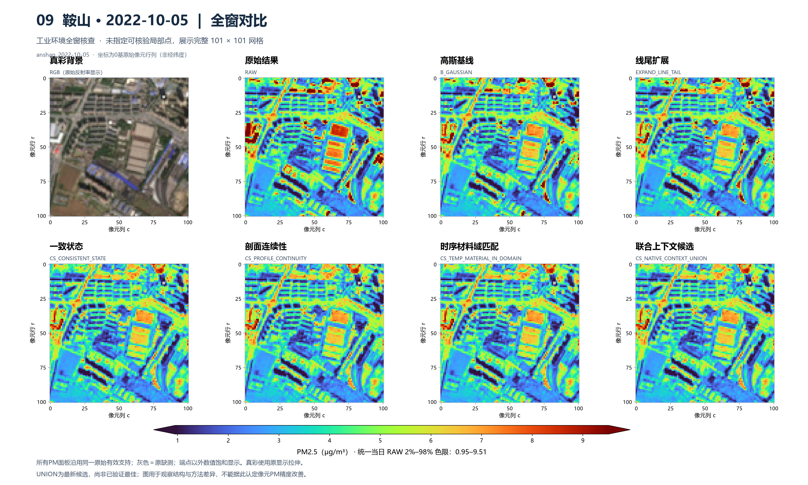
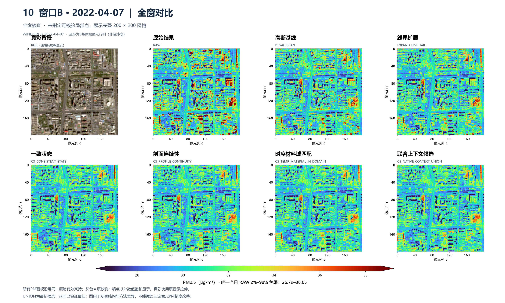

高亮残留的压低更明显了；进步主要来自后续小屋顶处理，最新联合参考继续补充部分遗漏。道路与建筑混合的位置仍有取舍。
直接打开八图同步比较 查看实际数值与方法说明
这些保护方法是并行方案。联合方案没有自动叠加前两种道路保护。最新“历史缺失训练”可在交互页切换，整体未胜出。
固定30个小亮对象中，相对高斯的对象平均下降：CS 0.49，联合 0.82 µg/m³。这描述输出纹理改变。
同149个有观测站窗，RMSE：高斯 19.59、联合 19.64；目前尚未显示实测PM准确率改善。
图中固定B58背景、原有效像元、同场RAW色限。灰色是原缺测。所有图直接读取已完成缓存，保留正例和道路代价。
先看01—05的亮残留，再看06—07道路风险，最后看08—10熟悉的全景。每场可下载PNG；交互页支持八图同步缩放、切换12种方法。
第01行为原六格均值，其余为已标记位置。数值下降本身不表示真实误差下降；06、07为道路混合风险。
原来关注的六格小亮对象：看Gaussian到CS的变化，以及联合方案是否还有新增收益。

这是另一日期的大亮结构单点，不是3月的六格小屋顶；查看联合参考的新作用范围。

比较偏保道路的域匹配与联合材料模型：后者可继续处理这里。

比较高斯、CS和联合参考；这里靠近原窗下边缘，历史支持不足。

固定30对象队列中的单像元小亮点；观察较小幅度的追加缓解。

不利例：联合方案也压低此道路地图交格；同时看域匹配方案的保留效果。

不利例：联合参考扩大作用范围后，道路地图交格也发生额外降低。

回看此前讨论过的岳阳道路全景，比较细长结构是否被明显削弱。

查看工业环境中亮厂房与周边局部结构；不预设所有厂区像元都应高。

回看原北京窗口B的全景，兼顾道路、树侧和亮屋顶。

10个已算场景，17张全景／局部图；每张7种PM方案加1张真彩。没有新增训练或模型推理。查看原156场完整方法库